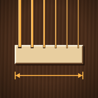

LUTHIFER

Nut Slot Calculator
Works out where to cut each string slot on a guitar nut so that every pair of neighbouring strings has the same gap between them, edge to edge. Enter the nut width, the bass and treble offsets and your string gauges, in inches or millimeters, and read the slot positions from the diagram and table.
How the spacing is calculated
With nut width W, offsets a and b, and string
gauges d₁ … dₙ from bass to treble:
S = W − a − b G = S − Σd + (d₁ + dₙ)/2 g = G / (n − 1) x₁ = a xᵢ = xᵢ₋₁ + (dᵢ₋₁ + dᵢ)/2 + g
The app shows this working with your own numbers under How it was calculated.
Help and feedback
Found a problem or have an idea for another tool? Open an issue on GitHub.